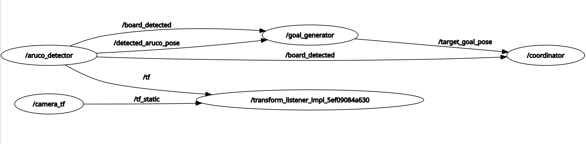
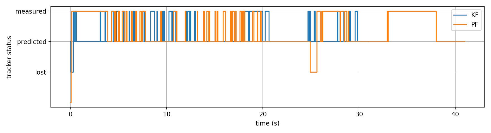
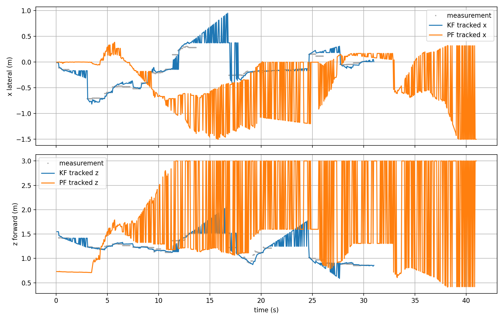
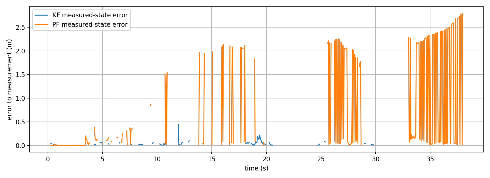
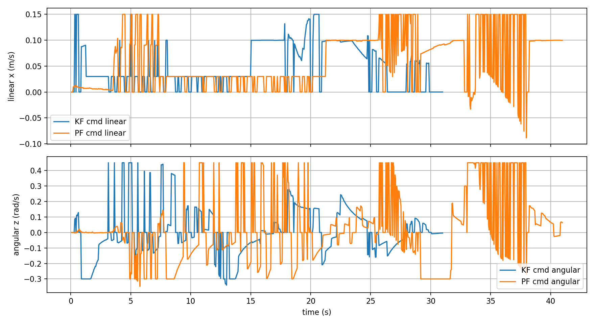

SmartFollower & Tracker: A TurtleBot 4 That Keeps You in Frame
Tatwik, Lu Yan and I built a robot that follows a person around a warehouse where GPS doesn't work. An OAK-D camera spots an ArUco board the person carries, solvePnP works out its 6-DoF pose, and a tracking filter turns that into velocity commands. We wrote two filters, a Kalman filter and a 300-particle filter, and raced them against each other on the same hardware run. On top sits a three-state FOLLOW, PREDICTED and LOST supervisor with a LiDAR safety guard. We got it all working in Gazebo first and then on a real TurtleBot 4.
Follow the inspector, don't hit anything, and don't lose them.
We imagined someone investigating a problem on a warehouse floor. The robot has to find, track and safely follow a chosen target through a busy space with no GPS, past aisles, staging areas and packing zones, steering around obstacles and saving time-stamped evidence so the trip can be reconstructed later. That setting throws everything indoor robots dislike at you: things blocking the view, changing light, narrow gaps, and people who move the way people do.
Before writing any code, we wrote the requirements down as numbers. Find the target in 3 s or less, keep tracking it at least 90% of the time over five-minute runs with three or more occlusions, pick it back up within seconds of losing it, hold a set follow distance, and have zero collisions, ever.
A TurtleBot 4 that had to put every sensor to work.
The robot is a TurtleBot 4 on a Create 3 differential drive base. Wheel encoders and an IMU handle odometry, a 2D LiDAR finds obstacles and builds the map, an OAK-D RGB-D camera identifies the target and measures how far away it is, and a Raspberry Pi does the thinking. Underneath all of the software, the base's bump, cliff and wheel-drop sensors act as a last line of hardware safety.
u = [v, ω]ᵀ the only two knobs the controller gets to turn
The person carries an ArUco fiducial board (DICT_5X5_100 dictionary, 2.25 cm markers) instead of the robot trying to recognize what a person looks like. We chose that on purpose. A fiducial tells you exactly who the target is and gives a measured pose, even with the kind of occlusions and lighting changes a warehouse is guaranteed to have.
Three nodes, to see, to believe and to act.
The ROS 2 pipeline runs at 20 Hz across three nodes we wrote. A perception node finds the ArUco board using adaptive thresholding and checks its corners, then solves for the full 6-DoF pose. A tracking node keeps a filtered estimate of where the target is, and where it's heading, even between detections. A control node turns that estimate into velocity commands, and a LiDAR safety guard can overrule anything the follow law asks for.

z is the distance ahead to the target and x is the sideways offset, the two numbers that drive the robot
Two filters walk into a warehouse.
The camera loses the board all the time, when someone turns a shoulder, passes a shelf edge or walks through a glare, so the tracker is what really holds everything together. We built two estimators that plug into the same interface and raced them. The Kalman filter keeps the state [x, z, vx, vz]ᵀ under a constant velocity model, predicting forward with the velocity and correcting with each new measurement, weighted by the Kalman gain. The particle filter scatters 300 guesses with Gaussian process noise, weights them by how well they match the measurement, and resamples. It can handle nonlinear motion better, but it needs a lot more tuning.
Both offer the same predict and correct calls: update() for each measurement, peek(dt) for a one-step forecast, and rollout(dt, n) to draw predicted paths. The control node really can't tell which one is running, and that's what kept the comparison fair.
Follow at 0.65 m, and stop trusting a guess after three seconds.
ω = clip( −K_ang·x, −ω_max, +ω_max ) heading, to keep the target centered
dead zones: when |x| < 0.08 m and |z − d_target| < 0.05 m, hold still instead of twitching
| Parameter | Symbol | Value |
|---|---|---|
| Follow distance setpoint | d_target | 0.65 m |
| Linear gain | K_lin | 0.8 |
| Angular gain | K_ang | 2.0 |
| Max linear speed | v_max | 0.15 m/s |
| Max angular speed | ω_max | 0.6 rad/s |
A three-state supervisor sits above the control law. While the board is in view the state is MEASURED and the robot follows normally. When the board disappears it drops to PREDICTED, and for up to three seconds it follows the filter's forecast at a slower speed, coasting through the gap on physics instead of sight. After three seconds it calls the target LOST and stops. A robot that keeps driving on an old guess is exactly the robot that finds the one obstacle it was never supposed to hit. The LiDAR guard runs under all three states.
Break it in Gazebo, where crashes cost nothing.
The whole pipeline ran in Gazebo before it ever went near the hardware. A leader TurtleBot carried the board around a walled test room while the follower tracked it, and RViz showed the occupancy grid, laser scan and camera view. Because the nodes, topics and parameters were identical, moving to the real robot took a camera calibration and a TF tree, not a rewrite.
The Kalman filter won, and the particle filter wandered off the map.
Both filters replayed the same recorded 20 Hz hardware run, with exactly the same detections at exactly the same times, so the filter was the only thing that changed. The KF stayed close to zero error the whole way through. The PF tracked well for about twelve seconds and then fell apart. Its sideways estimate started swinging across ±1.5 m, and its forward estimate sat pinned against the 3.0 m safety limit for the rest of the run.
| Metric | Kalman filter | Particle filter |
|---|---|---|
| Mean error vs measurement | ~0.04 m | ~0.12 m |
| Max error spike | ~0.5 m | ~2.7 m |
| Divergence | none | after ~12 s, until the end |
| Velocity commands | stable throughout | degrade post-divergence |
Both filters replayed one recorded hardware session and received exactly the same measurements.




The answer was clear. A person walks at a speed where the constant velocity assumption is almost exactly right, so the Kalman filter is the right tool. It's numerically solid, cheap and stable. All the particle filter's extra flexibility bought us here was more variance.
Watch it work.
Every demo we recorded, in order, from the first tests of the state machine switching to the full follow on hardware. The complete documentation lives on the team project site
What I took away from it.
If you want to compare filters, put them behind one interface, or you end up comparing your glue code instead. Because the KF and PF swapped in and out on the same replayed data, the divergence at twelve seconds could only be the filter's fault. Match the model to the way things really move. A person walking is close to constant velocity, and 300 particles of extra generality lost to four state variables built on the right assumption. And let a system give up on a timer instead of on hope. Three seconds of prediction, then stop. The state machine admitting what the robot doesn't know is what kept our record at zero collisions.